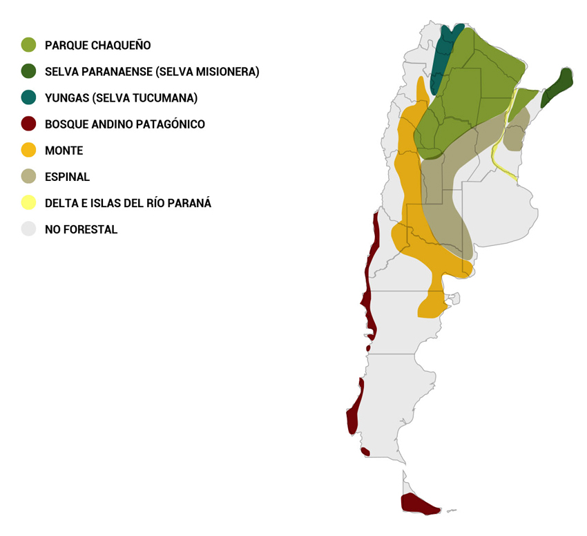
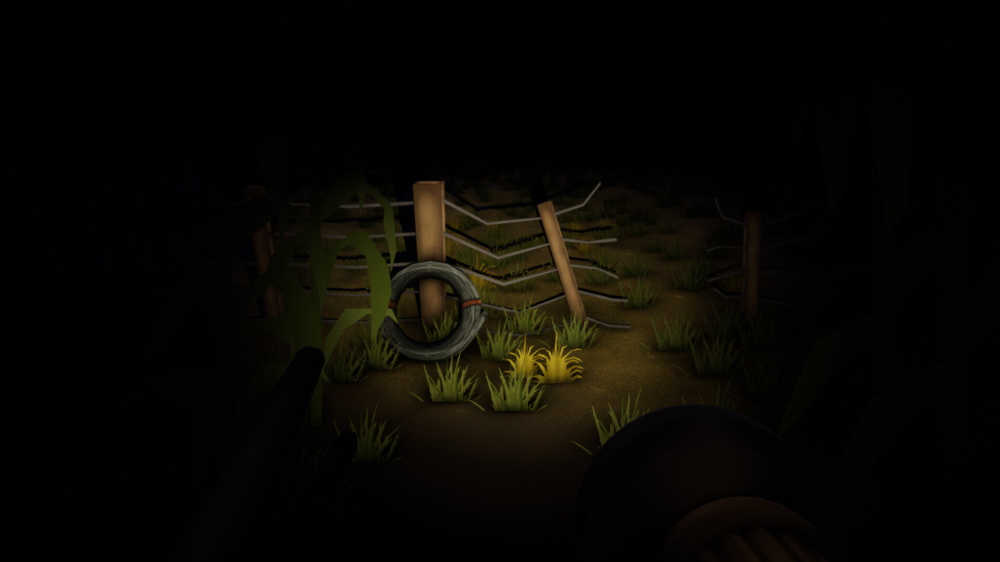
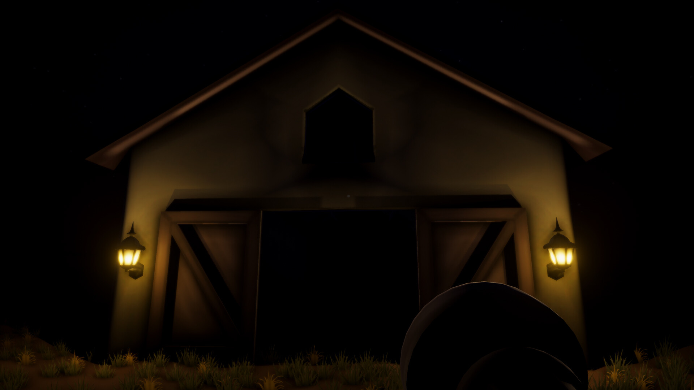
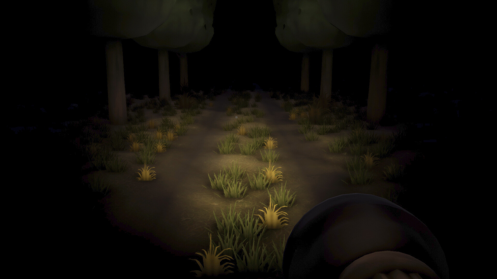
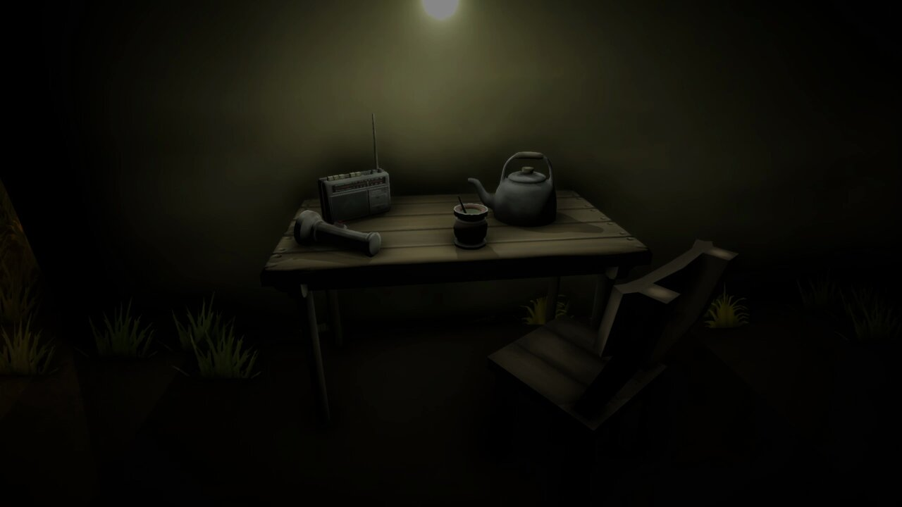

El Pomberito
¿Que es el Pomberito?
El Pomberito es una leyenda de la Mitologia Guarani ,que habita en los bosuqes del Noroeste de las Provincias de Argentina
Caracteristicas
El Pombero puede ser travieso o malvado, pero también puede ser un buen amigo si se lo trata bien. Para ganarse su amistad, se le deben dejar ofrendas por la noche, como tabaco, miel o caña. Así, se le puede pedir que cuide los cultivos y los animales, y que traiga abundancia. Si se cumplen con las ofrendas, el Pombero protegerá el hogar y ayudará en los momentos difíciles. Pero si se olvida hacerle ofrendas durante 30 noches seguidas, el Pombero se enojará y empezará a hacer travesuras en la casa, convirtiéndose en un enemigo. Siempre está vigilando y, si un cazador mata más animales de los que va a comer, o si un leñador corta más madera de la que va a usar, el Pombero se enfurecerá y su castigo puede ser muy cruel.
El Pombero también protege a las aves. Puede transformarse en árbol para tenerlas entre sus ramas y se comunica con ellas silbando. A este duende le gusta cazar niños y, si los encuentra haciendo travesuras, especialmente si están lastimando a un animal, puede raptarlos y chuparles la sangre. Por eso, durante la siesta, las madres advierten a los niños que deben quedarse cerca de la casa, ya que el Pombero suele rondar a estas horas buscando niños. El Pombero también tiene un interés en las mujeres. Se dice que ha llegado a raptarlas, violarlas y dejarlas embarazadas, castigando así a las esposas infieles y a las jóvenes que no han sido bautizadas. Sin embargo, puede ser sensible y enamorarse de una mujer embarazada de una niña, acompañándola y protegiéndola. El Pombero es muy travieso y disfruta abriendo puertas y ventanas con fuerza, tirando piedras o moviendo cosas solo para molestar. Nunca debe pronunciarse su nombre en voz alta, burlarse de él o silbar durante la noche, ya que esto lo enfurece. Un solo roce de sus manos peludas puede causar mudez, temblores o confusión.
Pomberito
El Pombero
¿No lo sientes? ¿No te espanta ese silbido que ha salido del espeso matorral? No es el grillo, ni la víbora ni el ratídico chirrido del suinda. No es el viento que silbando se detiene del callado cementerio en el ciprés. Ni el arroyo en su salterio cuyas notas se repiten con monótono sostén. No es la voz con que se queja a medianoche tristemente en el boscaje urutau ni la débil voz doliente con que el pora nos revela sus angustias cuando deja el ataúd. Ni siquiera es el rapaz que nos visita para hablarnos como el cuervo de Poe de Leonora, de la amada que en su lecho duerme tierna y soñadora, recordándonos tal vez. Es el duende de la tierra que el Progreso relegara a las estultas fantasías sin piedad... Es el genio de las noches paraguayas que en el prado se desliza por en medio del chircal. Es la sombra del pasado. Es el alma del indígena infeliz. El fantasma que abandona con el véspero su sepulcro guaraní. Es el indio. Es el Pombero a quien llaman guaicuru que se viste del follaje de las selvas y el plumaje del ñandú. En la sombra que los árboles arrojan de la luna al resplandor y en el hueco de los troncos y en las zanjas y en las grutas, sin un eco, se agazapa con temor. Es el cuco. No os sorprenda, niños míos, que es un cuento, pero un cuento contra el mal. Es vampiro misterioso que del niño vagabundo chupa sangre con afán. Al conjuro del murciélago despierta. Las luciérnagas le anuncian con su luz, cuando rasgan con sus lampos de las noches funerarias del capuz. Él no corta el aire al sesgo de su vuelo como el ave de rapiña nocturnal: él se arrastra con sus silbos más temible, más ligero que el veloz ñacaniná. No hay gorjeo, no hay graznido, no hay murmullo, que no sepa repetir; pues sus presas él atrae con sus remedos, sus remedos de falaz cavureí. Amalgama de hombre y fiera, mitad ave sin sus alas, y serpiente otra mitad, es el genio de las noches, en la tierra paraguaya, y el cadáver errabundo de la raza de Guarán.
(De: Sinforiano Buzó Gómez, Índice de la Poesía Paraguaya, 2ª edición, 1952)
Ubicacion
Ver Mapa de Google Maps
Videojuego de El Pomberito
El videojuego del Pomberito recientemente estrenado en Steam ,genero mucho interes por parte de varios Streamers Mundialmente conocidos :tanto Sudamericanos como NorteAmericanos
Contexto
Mientras el protagonista recorre el campo, se topará con elementos inspirados en el folclore sudamericano, lo que aporta un toque cultural distintivo al género de terror. La tensión en el juego aumenta con el paso de cada noche, intensificando la atmósfera de suspenso y sorprendiendo al jugador con giros y encuentros inesperados en su camino.
Una de las características más sobresalientes de "Pomberito" es la variedad de finales disponibles, permitiendo a los jugadores experimentar diferentes desenlaces según sus decisiones y acciones a lo largo de la semana. Los jugadores se verán motivados a desentrañar los enigmas que envuelven los horrores inspirados en el folclore rural de Argentina.




Trailer de el juego "Pombero" de Steam
Galería de Imágenes